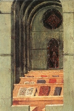
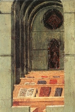

|  |
|---|


|  |
|---|


In copiis nonnullis huius operis invenitur hoc colophon: «Hec sunt ergo que ego fr. Raynaldus de Piperno ordinis predicatorum ad preces quorundam sociorum et specialiter ad mandatum reverendissimi patris domini prepositi sancti Audomari, post fratrem Thomam de Aquino, quasi qui colligit racemos post vindemiam, utinam non diminute collegi.»
Nota etiam quod de Thoma scripsit Ptolomaeus Lucensis in sua Historia ecclesiastica nova, circa 1315 composita: «Multa etiam alia scripta sunt ab eo utilia que magis habentur per modum reportationis, que ipse videns postea correxit et inde ulterius approbavit, ut (...) postilla super Iohannem, de qua ipse super quinque capitula proprio stylo notavit, totum aliud reportatio fuit sed correctum per ipsum.» Nescimus quae sint illa capita a Thoma redacta: ergo consilium nostrum fuit in titulis capitulorum huius editionis de hac re tacere.